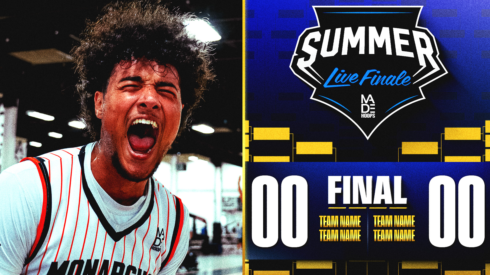

Freelance Graphic Designer · 2020–2026
YouTube Thumbnails
Six years of creating thumbnails for YouTube creators, athletes, and livestreaming personalities.
- Years
- 6
- Combined video views
- 100M+
- Creators
- 100s
- Thumbnails created
- 1,000+
01 / Featured work
A few standouts.

Lonzo Ball’s What An Experience
Sports & podcasts

Beta Squad
Creators & livestreams

Joe Knows · NBA 2K26
Gaming & NBA 2K
02 / Selected thumbnails
Across the communities.
A selection of sports, creator, and gaming work from throughout the years.
Sports

MADE Hoops · Christian Bell

MADE Hoops · Summer Live Finale
Creators & Livestreams
Beta Squad · Among Us

Fanum · Best moments

Tylil · Rap battle

Fanum · Sidemen Inside
Gaming & NBA 2K

OkoDre · Steal a player

LakerFan · NBA 2K26 Sharp-Lock build

Nostalgic · 60 to 99 overall

Solo · NBA 2K26 top 10 rewards

Baugher · Monstars Pro-Am

LakerFan · Subscriber draft
03 / My experience
A six-year thumbnail journey.
For the past six years, creating thousands of YouTube thumbnails has been the foundation of my creative journey.
What started as designing thumbnails for anyone willing to give me a chance grew into collaborations with creators like Fanum, Beta Squad, Lonzo Ball's podcast, Tylil, LakerFan, Joe Knows, OkoDre, and many other creators across the NBA 2K and livestreaming communities.
This work has allowed more than a hundred million people online to view my artwork. Every project pushed me to become a better designer, think more creatively, and constantly raise the bar for myself. The work was never only about making an image look exciting; it was about finding the clearest visual hook and building a story that made people want to watch.
Beyond the designs themselves, this journey gave me experiences I will never forget. From helping creators with multiple NBA 2K Community Days to being part of Streamer University as an artist behind the computer, I was able to step behind the scenes, meet talented people, and see firsthand how much work goes into creating content that millions of people enjoy every day.
The people I met, the confidence I gained, and the skills I developed shaped the designer I am today. Every creator who trusted me with their brand, every late-night revision, every deadline, every success, and every mistake helped shape this chapter of my creative career.
I am grateful that this work allowed me to become a respected artist in the thumbnail space and create lifelong friendships with so many talented artists along the way. Those friendships made the journey more meaningful and continue to influence the way I create.